Pedakallēpalli is a village in Krishna district of the Indian state of Andhra Pradesh.
It is located in Mopidevi mandal of Machilipatnam revenue division.
Sri Durga Nageswara Swamy Temple is an ancient temple built in A.C.1140.
It was later renovated by Challapalli Raja, Sri Yarlagadda Kodanda Ramanna in 1782. The ...
The native language of Pedakallepalli is Telugu, Urdu, English and most of the village people speak Telugu, Urdu, English. pedakallepalli people use Telugu, ...
The Pin Code of Pedakallepalli is 521130. Get more details along with the Pin Code of Pedakallepalli. Pedakallepalli is located in Krishna district in ...
Beautiful village on the bank of Krishna river in Krishna District, Andhra Pradesh, India. Visit us you'll never regret · Rangoli competitions . . . . . . . .
Veturi Sundararama Murthy (29 January 1936 – 22 May 2010), known mononymously by his surname Veturi, was an Indian poet, lyricist and journalist who is ..
Veturi Sundararama Murthy who is popularly known as Veturi won National award for his lyrics of 'Raalipoyepuvva Neeku Raagalendhuke' and he is ...
It is a biography of Sri Veturi Prabhakara Sastry garu. Here is an excerpt of the book -. Identity is connectedness to Source.
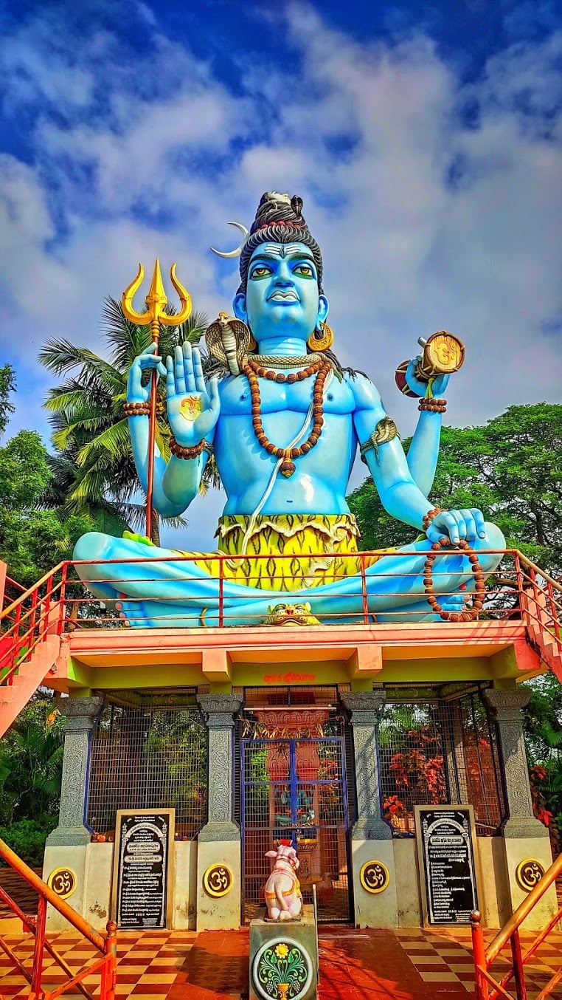 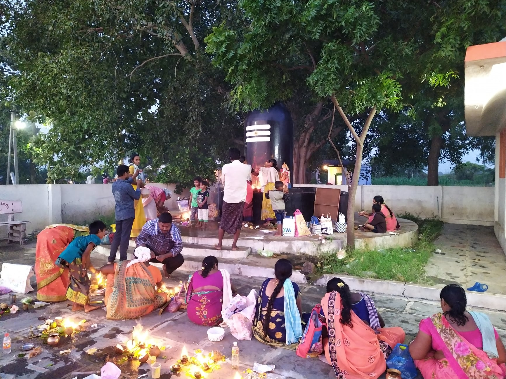 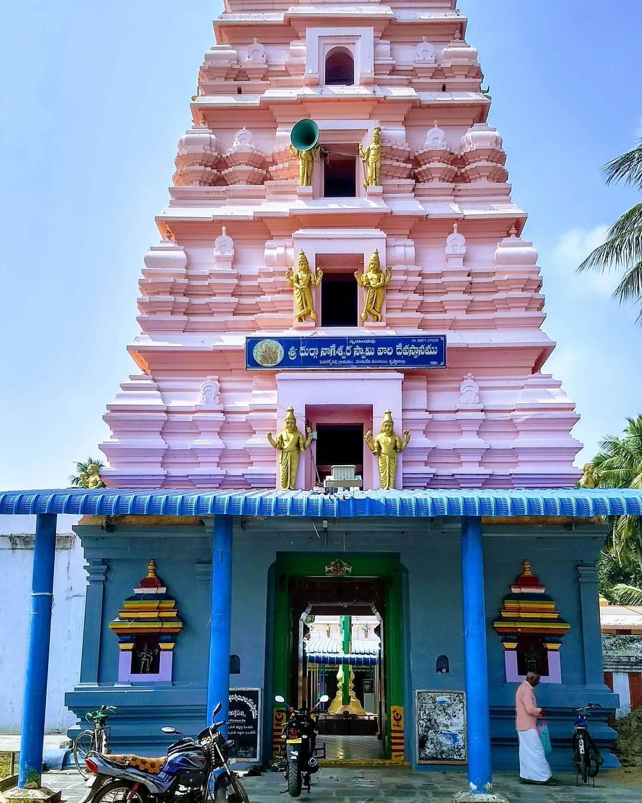 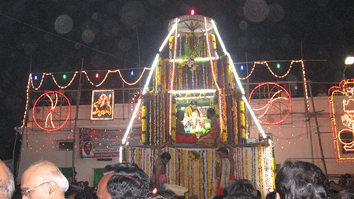 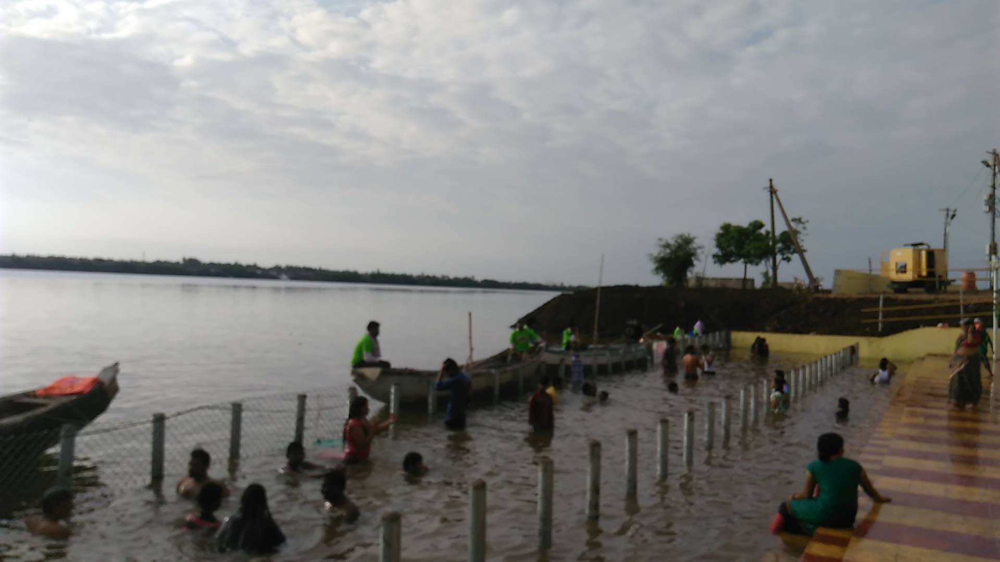 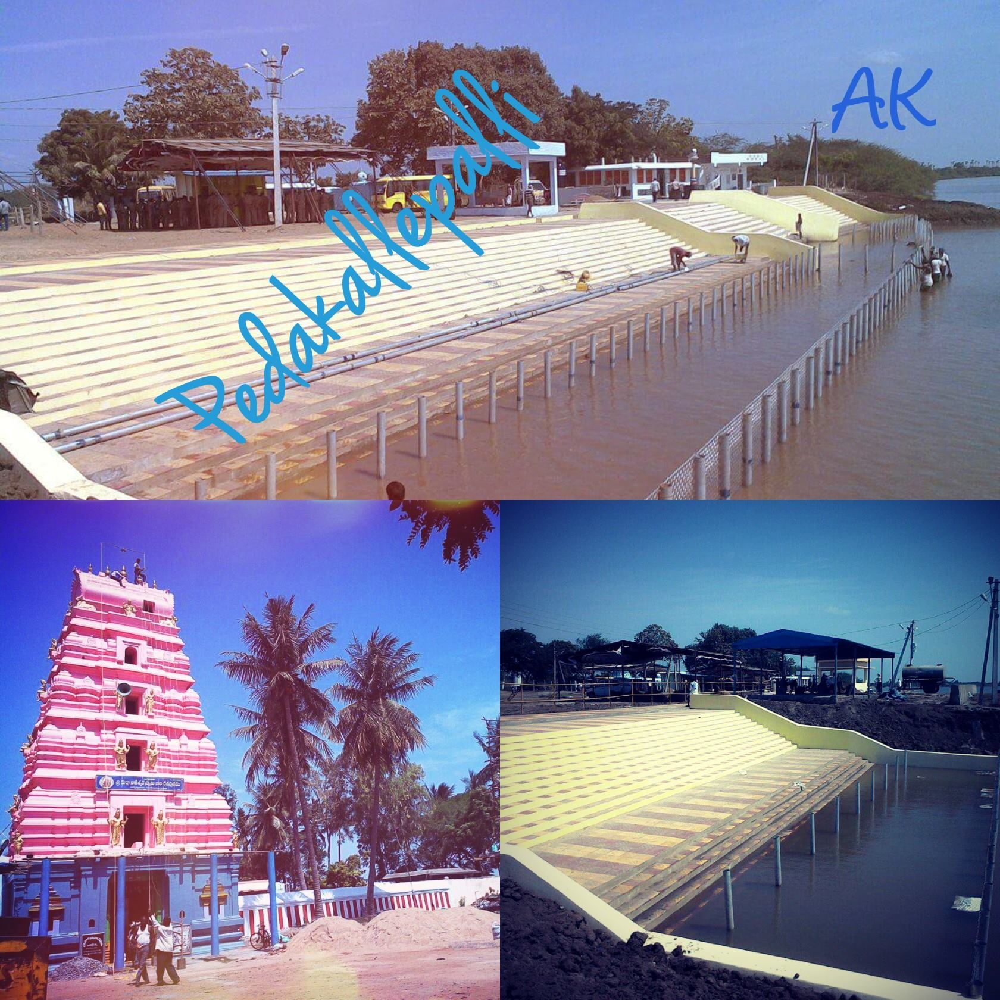 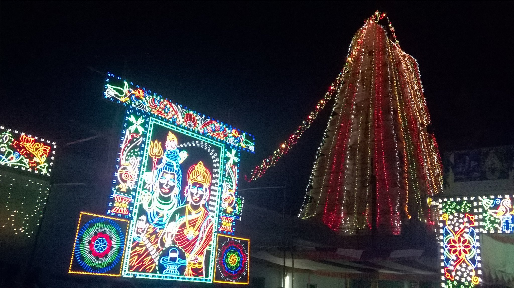 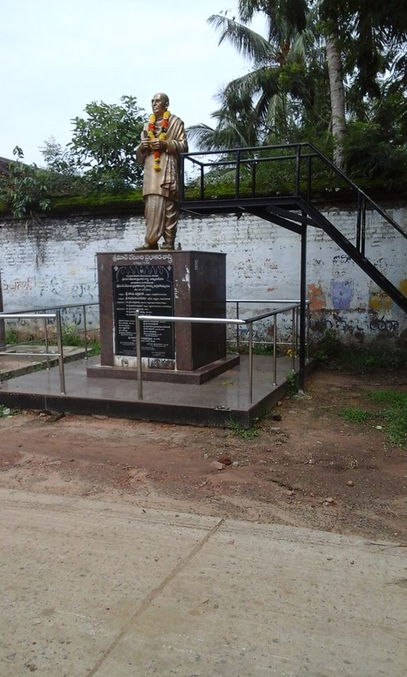 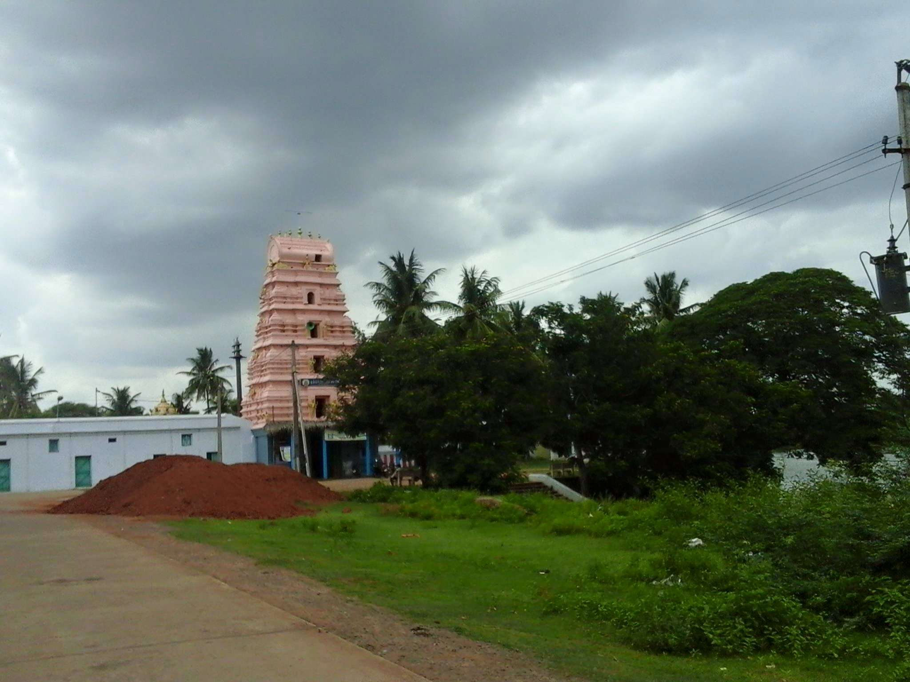 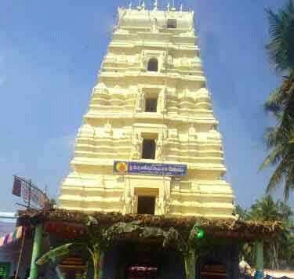 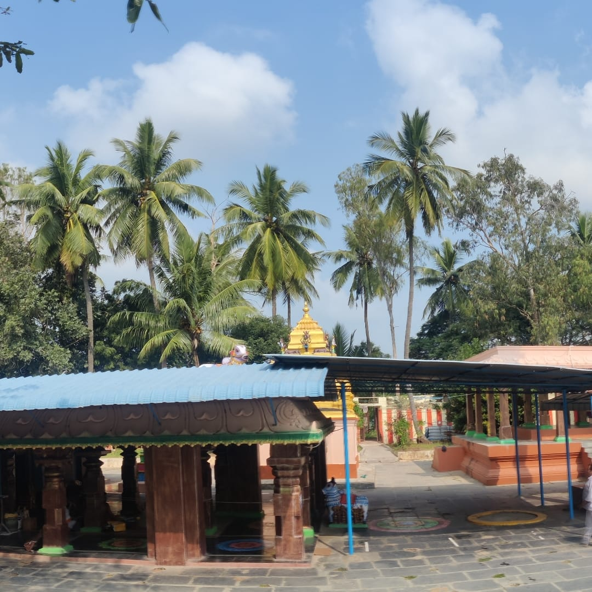 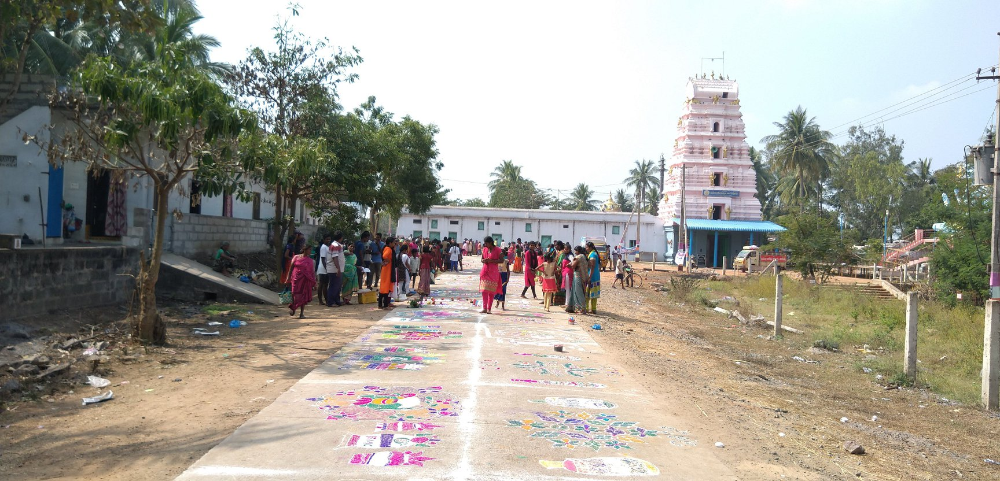 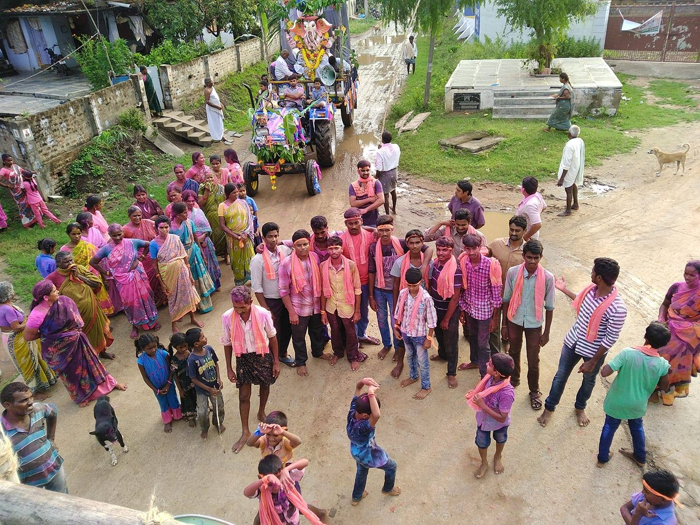 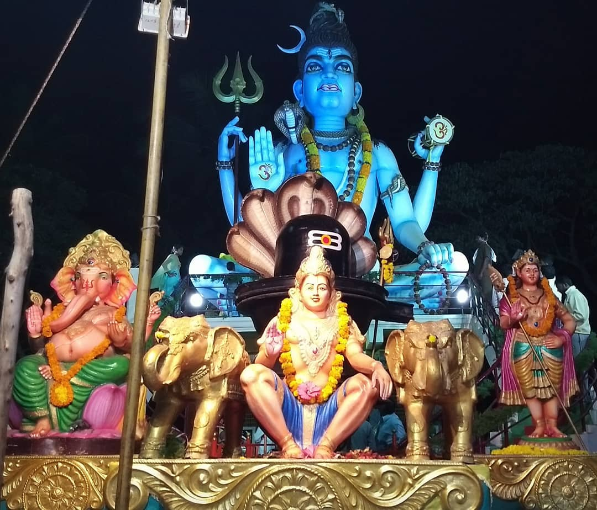